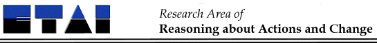

This page is a historical archive. For the latest information please visit commonsensereasoning.org.

E-mail Debate Procedure
Each received research article is up for questions and debate
during the first three months after it has been posted. This is intended
to be like the question period after a conference presentation: an
opportunity to ask questions to the author, to obtain clarifications
and to give feedback. For particularly controversial and/or significant
papers, this dialogue may well develop into an extended discussion about
a research issue that the paper has brought up.
The following procedure is used:
A separate debate is organized for each received article.
(One may imagine having cross-links between debates, but we'll
deal with that when the need arises).
Questions, answers, and debate contributions (in short:
interactions) are sent by E-mail to the Colloquium editor.
Interactions are post-edited and accumulated to the
Newsletter that is sent out to all members of
the colloquium. This Newsletter is sent out as soon as possible,
and usually on the same day as the contribution arrived or the
following day. Multiple contributions during the same day go
into the same Newsletter.
Contributions are also added to the monthly News Journal,
where all contributions concerning a given article during the
month in question are represented together.
All active researchers in the area are welcome to send in
debate contributions (questions, comments).